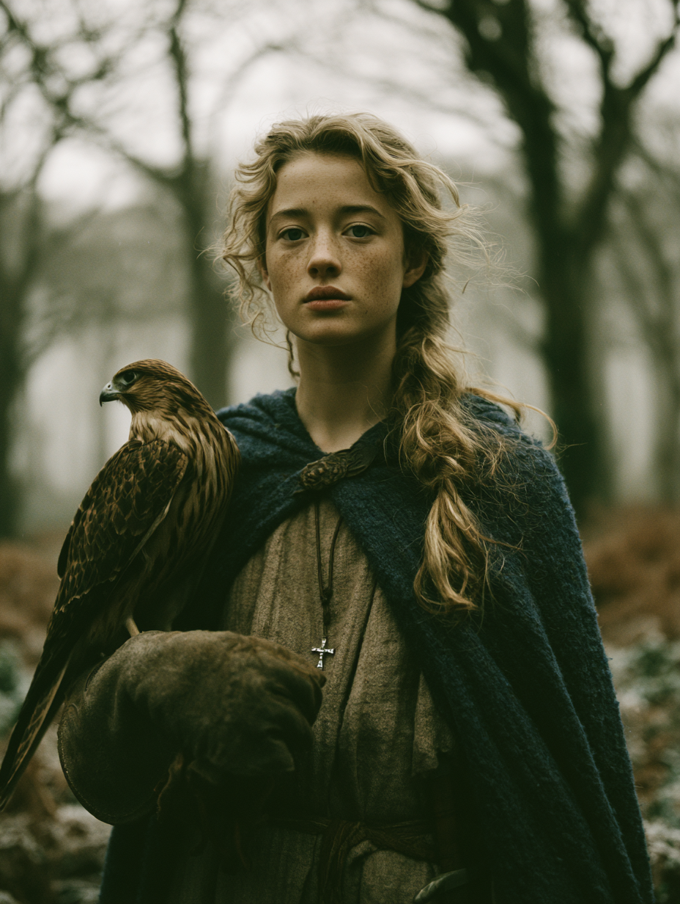

of the Three Oaks · daughter of a slain knight · sister of Donatien · bound at character creation, untested in play

Tiphaine merc'h Riwall is a fresh squire in the eschille of the Wolves of Vagon, attached to the Wolf yet to be revealed and serving her first season in the field. She is fourteen years old, of dual Breton-Roman parentage, devoutly Roman Christian, and the orphaned daughter of Sir Riwall ap Hoel of the Three Oaks, who fell at the Battle of Cambridge thirteen months before the campaign opens. She is small, foreign-accented, and quiet; she is also the most honourable person within the eschille, though no one has yet realised it.
She is fourteen and small for her age — petite in build, finely-boned, with long flaxen hair gone wavy at the temples and plaited loose over one shoulder, grey eyes set wide and watchful, and a fine scatter of freckles across the bridge of her nose. Her mouth rarely settles into a smile. Her bearing is self-contained, almost preternaturally still; she does not waste motion. She wears practical wool and leather rather than finery: a dark blue cloak of her father's with a torn-and-mended hem, a clean linen shift beneath, a small silver cross on a leather thong at her throat, her father's hunting knife at her belt, and a heavy leather gauntlet for her hawk. She is going to grow into a quiet, striking kind of beauty. She does not know this, and would not believe it if you told her.
She speaks rarely and listens often. Her Cymric is fluent but unmistakably foreign — vowels rounded where they should be flat — and people are always telling her it is charming, which she finds irritating. When she does speak, her words land; she does not waste them on pleasantries. Under stress she becomes quieter rather than louder, and her face becomes harder to read rather than easier. She has the courtly graces her mother trained into her and deploys none of them voluntarily.
Non potes vitam tuam vivere portata. You cannot live your life being carried — her mother's Latin, said often
The forest is the only place my face feels like my own. Said to no one, on the riding-progress back from Vagon
Ubi enim est thesaurus tuus, ibi est et cor tuum. Matthew 6:21 — "where your treasure is, there will your heart also be" — the verse her mother taught her last
Hit Points 10. She is small (SIZ 9) and will not grow much taller; her endurance (CON 12) is higher than her frame suggests. Her appearance is genuinely above ordinary, but presented inwardly — she does not perform it. Her dexterity supports the bow and the hawk; her strength is unremarkable, sufficient for the hunting work and no more.
| Passion (court) | Value | Note |
|---|---|---|
| Hospitality (Civilitas) | 14 | Proper knightly virtue, observed correctly. |
| Devotion (Christ) (Adoratio) | 12 | Daily, quiet, Roman. Latin prayer before sleep and before meals. |
| Chivalry (Civilitas) | 9 | Developing — she is acquiring the Wolves' code by exposure. |
| Station (Civilitas) | 8 | She knows her place in the world. |
| Fidelitas (all bonds) | 0 | Homage, Fealty, Loyalty (Companions), Loyalty (King), Duty (Vassals) — all unset, awaiting play. |
Her Christian religious virtues (marked †) are uniformly dominant; her worldly defensive traits also dominate where they appear. The pattern is a devoutly-formed girl who has nonetheless built walls.
| Chaste | 13 | 7 | Lustful |
| Energetic | 11 | 9 | Lazy |
| Forgiving | 13 | 7 | Vengeful |
| Generous | 8 | 12 | Selfish |
| Honest | 12 | 8 | Deceitful |
| Just | 8 | 12 | Arbitrary |
| Merciful | 11 | 9 | Cruel |
| Modest | 15 | 5 | Proud |
| Prudent | 11 | 9 | Reckless |
| Spiritual | 13 | 7 | Worldly |
| Temperate | 13 | 7 | Indulgent |
| Trusting | 7 | 13 | Suspicious |
| Valorous | 12 | 8 | Cowardly |
† = Christian religious virtue. All six are dominant. Modest 15 is her highest single trait and the framing-of-everything-else.
Her skills tell two stories layered over each other — her mother's relentless courtly drilling and her father's woods training, with the Family Characteristic of Bird-lover (+3 to bird skills) elevating Falconry above its natural level for her age.
Battle, Brawling, Compose, Gaming, Hunting, Recognize, Singing.
At Famous, her honour is known and is itself an instrument of play. She is going to be triggered on Honour rolls very readily, and is going to succeed on them. She is the squire who calls out dishonourable conduct when others let it slide — even from knights who outrank her. She cannot be bought; at 19, the cost of yielding to bribe, threat, or pressure is unthinkable. Combined with her Modest 15, her honour does not present as priggishness. She is not correcting anyone. She is just being — and her being makes some kinds of corruption uncomfortable.
Latin literacy at 9 is the single most quietly powerful skill on her sheet. In 464 A.D. Logres, most knights cannot read; most squires cannot read. Reading and writing in the language of the Church and the Roman administrative tradition is a churchman's skill. Tiphaine has it, and she has it well. The Wolves do not yet know this. When they figure it out, it changes the shape of what she can be used for and what she will be trusted with. The thing she has not yet figured out herself is that this skill is power, not just her mother's gift.
Tiphaine has no operating doctrine yet. She is fourteen, fresh, untested in the field beyond hunting and household work. What she has are dispositions — reflexes inherited from her parents and her grief, which the campaign will refine, complicate, and possibly contradict.
Silence and observation. She does not fill rooms with words. When she walks into a new place, her first half-hour is spent learning who stands where, who watches whom, what doors lead where, who has been drinking. She does not announce this work. She simply does it.
She tells the truth. Honest 12 and Honour 19 together make her unable to dissemble about things that matter, and unwilling to do so about things that do not. The Wolves will quickly learn that asking her a direct question gets a direct answer — sometimes one they did not want to hear.
She does not back down. Suspicious 13 makes her wary of the push itself; Honour 19 makes her unable to yield to dishonourable pressure; Modest 15 keeps her from escalating loudly. The result is a small foreign girl who simply does not move when a stronger person tries to move her, and who does not explain herself afterward.
She is competent and quiet. Bow 9 and Falconry 9 are real skills, but she handles them with the unshowy economy of someone trained by a man who valued results over flourish. She does not boast about the deer she takes. She processes them and brings the meat back.
She knows the forms perfectly and deploys none of them voluntarily. Courtesy 9, Flirting 9, Orate 9, Fashion 9 are all present on her sheet, drilled in by her mother. She chooses, almost always, to be the small foreign girl with the scowl rather than the Romano-British young lady her mother prepared her to be. The first time she switches on the courtly performance in front of the Wolves will be a moment.
Conflicted. Hate Saxons 14 is a hot passion she can be invoked by; Forgiving 13 and Merciful 11 are her deeper traits. She is more likely than her passion suggests to be kinder to a captured Saxon than to mistreat one — and her capacity for that kindness will surprise her, and may surprise the Wolves, when it comes up.
The defining structural fact about Tiphaine's interior is a tension between formation and defenses.
Her mother's project, completed before death: a devoutly Christian, courtly-trained, Latin-literate Romano-British young lady. The religious virtues took. The reading took. The household arts took. All six Christian virtues (Chaste, Forgiving, Merciful, Modest, Spiritual, Temperate) are dominant on her trait sheet, and her Modest 15 is her single strongest trait. She is, at her core, the girl her mother prayed she would be.
The walls she has put up since her mother died, and rebuilt since her father died: Selfish 12, Arbitrary 12, Suspicious 13. She watches everyone. She keeps what is hers. She has her own sense of fairness and is not always patient with rules she finds unjust. She trusts no one yet.
Both are real and both are dominant. She is devout and watchful, Forgiving and Suspicious, Modest and Selfish. She believes the things her mother taught her about goodness — and she has also learned, since her parents died, that the world does not reward goodness automatically. Which side wins in any given scene is the question her play will answer.
Not bent toward revenge. This is the most important interior fact about her, and the one most likely to be misread by a Gamemaster expecting a grief-driven avenger. Her father was killed thirteen months ago and her trait of Forgiving is dominant by margin. She is grieving, not enraged. The Christian formation took. Whether it survives the events of the campaign is a different question.
Beati misericordes: quoniam ipsi misericordiam consequentur. Matthew 5:7 — "Blessed are the merciful, for they shall obtain mercy" — from the Sermon on the Mount her mother had her memorise
In the forest, alone, before dawn. With the hawk on her fist and no one to perform for. This is the only setting in which she lets her actual expressions onto her face. She has not wept where anyone could see her since her father died, but she has wept in the woods.
Her father's holding, west of Vagon along the same stretch of marches the Wolves are working to recover. A manor house of timber and chalk; a small chapel with a tiled Roman roof her grandfather salvaged from somewhere; mixed forest behind it; three ancient oaks at the entrance to the home wood, from which the place takes its name. The Saxons burned the manor house and the chapel last summer; the peasants fled to Sarum with the rest of Vagon's people. The trees, presumably, still stand. The Wolves' progress will pass within a few miles of it. Tiphaine has not asked to ride home. She has not asked anyone whether the oaks are still there.
Tiphaine is Honest 12 — she does not lie — but she is also Modest 15 and Suspicious 13, which means there are many things about her she simply does not volunteer. A partial inventory of what the Wolves do not yet know, and may discover in play:
Tiphaine's immediate world is a narrow band of Western Salisbury between Sarum and the marches of Vagon — perhaps thirty miles across, much of it burned or recovering from burning. The Wolves are making their autumn-into-winter progress around the eschille's holdings. The harvest has been catastrophic. The winter ahead will be lean and possibly worse than lean. Saxon raiding has reached as far as Sarum's walls in living memory of every adult she meets.
The seat of the (vacant) Earldom of Salisbury. The previous Earl died at the Battle of Cambridge alongside Tiphaine's father; his son Roderick is missing in action. The town is run by the Castellan and the surviving knights. Tiphaine knows it from perhaps half a dozen previous visits in her life — the great feasts at Christmas and Easter, when her father came as a vassal. It is the largest place she has ever been.
The eschille's home. Sir Elaid is castellan. The lands around Vagon were burned along with Tiphaine's family lands last summer; the manor itself was defended and held. The peasants returned from Sarum to scattered, damaged holdings.
Her own home. Burned. West of Vagon along the same line of marches. Tenants gone or scattered, the manor house and chapel gone, the trees presumably standing. She does not yet know which.
Beyond her direct experience but pressing in:
Tiphaine wakes with her hand on her father's knife. The dream is always the same. A red banner held aloft against a green field, snaking in the wind like a living thing. She knows what it is because her mother told her, years ago, in Latin: a Roman cavalry vexillum, the dragon-standard of the late legions, carried into battle in Britain generations ago. It is hissing in the wind. It is calling someone. She does not know whether it is calling her, or whether she is just there to see it.
The dream visits her differently than it does the Wolves — for them, the dragon is a heraldic device on a field, the Cymric flag-of-the-people. For Tiphaine the dragon is Roman, her mother's memory of an empire she never saw. The same dream, refracted by who is dreaming it.
She has counted the nights. The dream has not missed one. She has told no one. She is waiting to see if anyone tells her first.
If they do — if the Pagan Wolf, or a churchman, or Merlin himself says I have been dreaming of a Red Dragon in her hearing — her Honest 12 and her Honour 19 together will not permit her to lie. She will say so. And the conversation that follows will be one of the inflection points of her life.
She is fourteen. She has not been played yet. What follows is not prediction but a sketch of the lanes the character can grow into, given her sheet and her situation. The campaign will choose among them, or invent others.
She will not be a grim avenger. Her sheet does not support it; her formation does not bend that way. A Gamemaster who plays her toward revenge against her trait of Forgiving 13 will be playing a different character than the one her player has built.
She will not be a courtly star. Her social skills are real but holstered; she chooses not to wield them. The first time she switches them on it will be an event, but it will not be her default mode.
She will not be untouched by what is coming. She is fourteen, fresh, devout, prickly, and quietly capable. The campaign is going to test all four of those things. What is left at the end is what she becomes.